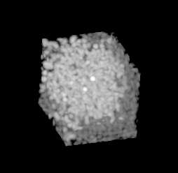
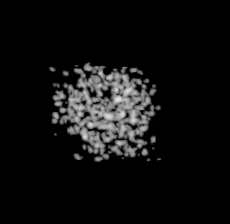
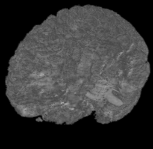
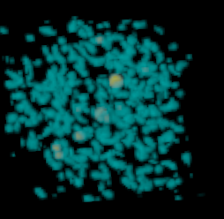
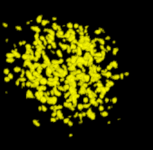
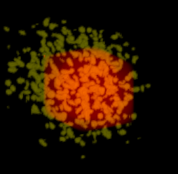
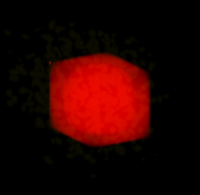

This is a software-based volume rendering, but uses a shear-warp factorization to rendering by making it a compositing operation instead. The framework is very general and object-oriented. A derived class can implement as complicated a process as desired for processing each voxel in the compositing. The simplest method is maximum intensity projection (MIP rendering) where the maximum image value is selected along each ray. The data set is an x-ray crystallography image of the superoxide dismutase molecule.
|  |
Rather than selecting a maximum intensity along each ray, you can sum the voxel values along a ray and normalize the resulting image.
|  |
Compositing image slices using eight-bit gray scale intensity with alpha blending is illustrated with a 3D MRI.
|  |
Compositing image slices using RGBA, eight bits per channel, is illustrated with the molecule data set. Two different colors are used based on a threshold value specified by the user.
|  |
Multiple color images can be composited, then alpha blended. This supports registered multimodality images to be displayed simultaneously. The top and bottom images are two volume rendered images. The middle image is a blend of those.
|  |
|  |
|  |
A gray scale rendering with lighting provided. The surface normals are calculated by gradient approximations of the image data using centered finite differences. The image below is a rendering of a 3D MRI.

|